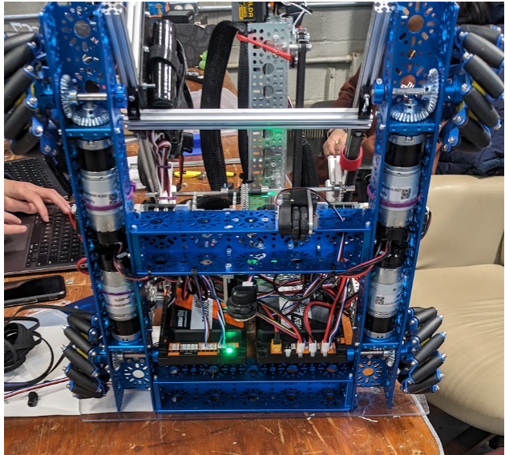

CyberSurge 2024-2025

CyberSurge was the FTC team I was privileged to mentor over my junior year. While I played a less direct role, that year taught me a lot of lessons. One of them is how teaching someone can actually help you. I was able to teach programming for the team, which included knowledge of autonomous routines, device configuration, firmware, and how to control a rotating arm and manage backlash. In addition to the teaching aspect, I put in time to help my team in other ways, like creating their logo or making a reveal video.
The robot was built to place rectangular prisms in an elevated bucket, or place the rectangular prisms with special clips attached onto the bar. Using a pivoting elevator to simplify intaking and outtaking worked for both placement options. This year was my second year of FTC and the second consecutive year we lost in the finals. However, instead of getting upset and giving up, I took attending the FRC World Championships as an opportunity to learn a lot from other, better FTC robots, since it was just upstairs. I was able to get pictures, take notes, and learn a lot about how other teams are able to optimize their cycles, make modular designs, and which parts are the highest quality to use.